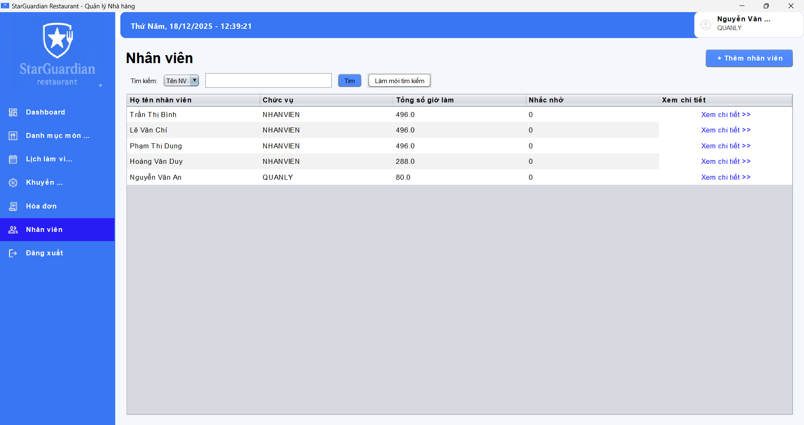

Quản lý Nhân viên
Công cụ để xem danh sách nhân viên, thêm nhân viên mới và theo dõi thông tin cơ bản của họ.
Thêm nhân sự
Để tạo tài khoản cho nhân viên mới, nhấn nút + Thêm nhân viên.
Một form sẽ hiện ra để bạn nhập các thông tin cá nhân và chức vụ cần thiết.
Danh sách & Theo dõi
Bảng danh sách hiển thị các thông tin quan trọng:
- Họ tên nhân viên & Chức vụ.
- Tổng số giờ làm: Giúp tính lương và đánh giá độ chăm chỉ.
- Nhắc nhở: Số lần vi phạm hoặc ghi chú.
Bạn có thể nhấn vào liên kết "Xem chi tiết >>" để xem hồ sơ đầy đủ của từng người.
Tìm kiếm
Sử dụng bộ lọc và thanh tìm kiếm để tìm nhanh nhân viên theo tên hoặc mã.